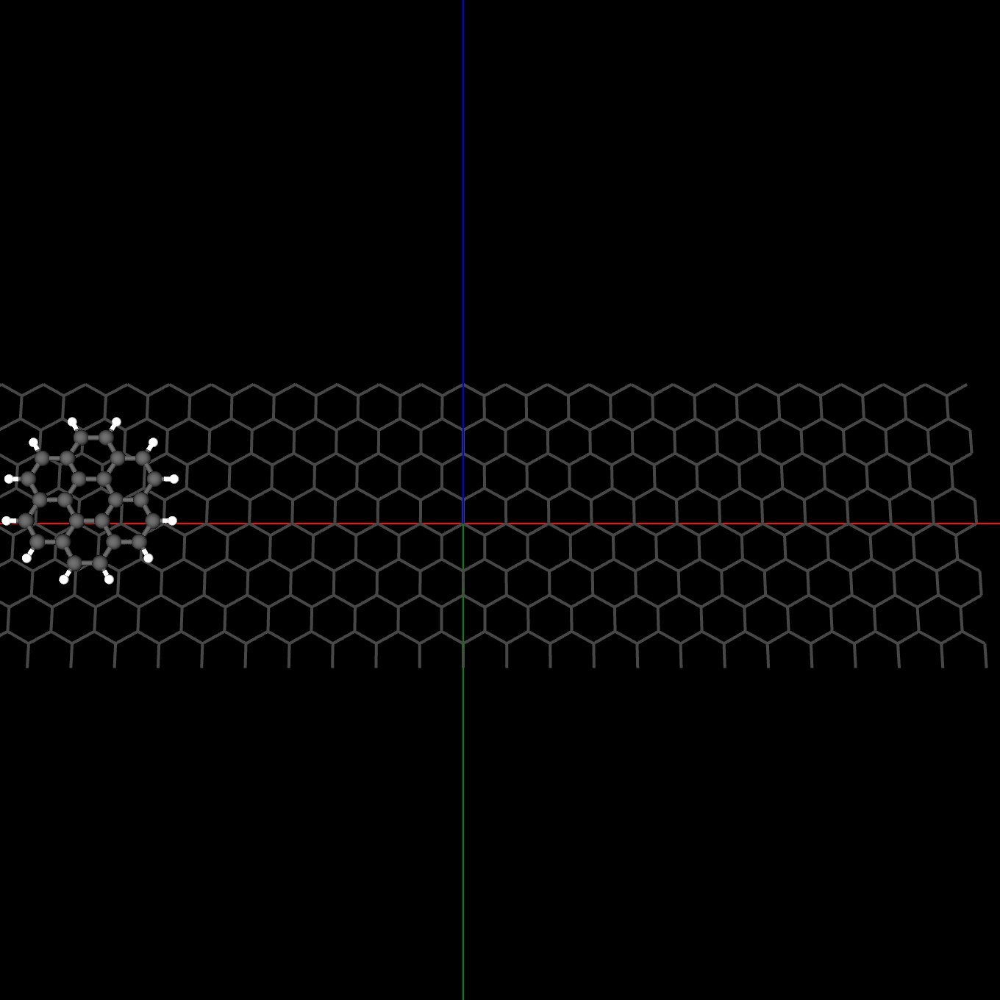
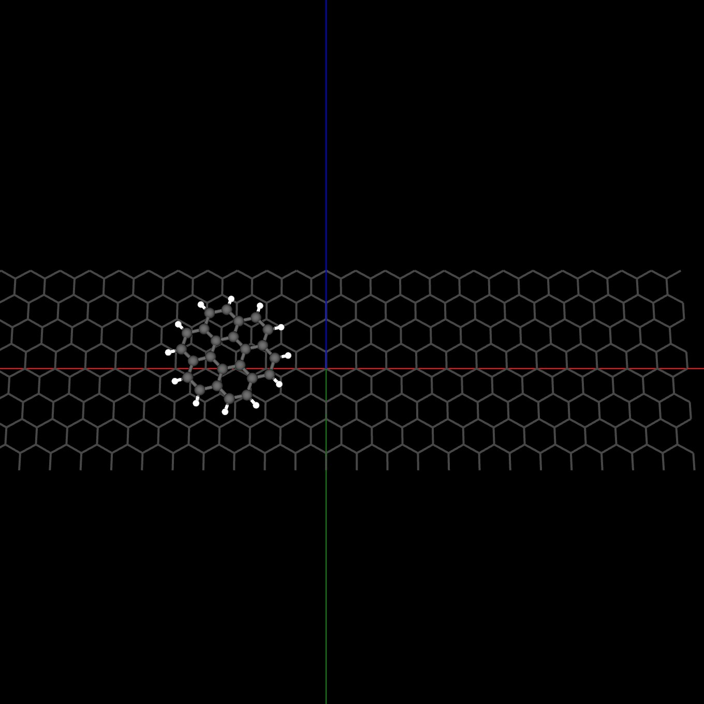

Superlubricity: A Graphene Flake That Slides on Graphene
Students push a flake of graphene along a ribbon of graphene, once turned and once lined up, and measure how far the flake slides and the barrier that holds it, with an AI agent in AIMS setting up each simulation they ask for.
Graphene is a flat sheet of carbon atoms joined in hexagons, and graphite is a stack of such sheets. No chemical bond joins one sheet to the next, so one sheet can slide on another, and the friction between two sheets changes when one sheet is turned. When the two lattices line up, every atom of one sheet sits in a hollow of the other, and the sheets resist sliding. When one sheet is turned, some of its atoms are pushed forward by the atoms below them while others are pushed back, and the pushes cancel. This state of very low friction is called superlubricity. In 2004 Dienwiebel, Frenken, and coworkers measured it with a flake of graphite on a graphite surface. In 2008 Filippov and coworkers explained why it ends: a sliding flake turns toward the position in which the lattices line up, and there it locks. In 2013 Feng, Salmeron, and coworkers observed the sliding of graphene flakes a few nanometers wide on graphene.
AIMS models every atom of the flake and the sheet below it. A student investigates the flake by talking to an AI agent: the student asks a plain-language question, and the agent sets up the experiment that answers it, runs it, measures the motion, and posts the measured data in the chat. The student reads the results and decides what to ask next. This article follows one student's path with one flake of graphene on a ribbon of graphene. The flake is pushed along the ribbon with its lattice turned from the ribbon and again with its lattice lined up, and the agent measures the barrier to sliding at seven angles. No atom of the flake or the ribbon carries a charge, and the Lennard-Jones force is the one force between them. The article on nanotube machines slides one nanotube inside another, and the article on molecular machines describes the forces in the model and how to open an example and type a prompt. The article on the magic angle of twisted graphene turns one sheet of graphene on another and computes how the twist changes the electrons.
A Flake on a Ribbon of Graphene
The window below shows a ribbon of graphene from above: 417 carbon atoms, 60 Å long and 18 Å wide, fixed in place and drawn as a wireframe. A coronene molecule, a flake of graphene seven rings wide with hydrogen atoms on its edge, lies 3.4 Å above the left end of the ribbon. The flake is turned 30° from the ribbon, and it starts with a speed of 100 m/s to the right, a kinetic energy of 16 meV. The lab is at 50 K with the thermostat off. The low temperature keeps thermal motion from moving the flake by itself. Press Play and watch the flake.
A coronene molecule on a ribbon of graphene, seen from above, turned 30° from the ribbon and moving to the right. The flake slides 15 Å at a steady speed, then turns and stops.
Open A Graphene Flake Slider from the list of examples (Nanotechnology, Molecular Machines). Examples belong to their author, so sign in and save your own copy with Save Project As in the Project menu. Then open the chat and type the prompts below. The answer to the first prompt in the example keeps its last frame: press "Load this state" on its card and the lab continues from 30 ps.
- Slide — “Run it for 30 ps and chart the distance from the left end of the ribbon to the flake. How far does the flake slide?”
- Lined up — “Give the same push to a flake that starts lined up with the ribbon.”
- Barrier — “How does the barrier to sliding depend on the angle between the two lattices?”
- Harder push — “Push harder: 150 m/s, for the lined-up flake and the turned flake.”
The Turned Flake Slides, and the Lined-Up Flake Is Held
The turned flake slid 15 Å along the ribbon. For the first 14 ps it kept a speed of about 90 m/s, and over each picosecond its speed was between 82 and 109 m/s. The ribbon took almost no speed from it. Then the flake began to turn, and the sliding stopped 18 ps after the start. By the end of the run the flake had turned 167°, and over the last 5 ps it moved within 0.8 Å. The energy of the sliding went into the turning and the vibrations of the flake. The flake came to rest with its lattice 19° from lining up with the ribbon. A flake of six-fold shape lines up every 60°, so the flake in this run stopped short of the lined-up position that Filippov and coworkers describe.
The second prompt sets the flake down with its lattice lined up with the ribbon, in the place where its energy is lowest, and gives it the same 100 m/s. In the first 20 ps the flake never moved farther than 3.2 Å from its starting place, and after 30 ps it was 4.9 Å away. It moved back and forth between neighboring sites of the lattice. When the lattices line up, all 24 carbon atoms of the flake meet the atoms of the ribbon at the same moment, and their pushes add up.
The Barrier Depends on the Angle
For the third prompt the agent holds the flake rigid 3.4 Å above a sheet of graphene 64 Å wide, turns it to each angle, and moves it over one cell of the lattice in steps of about 0.1 Å. At each place it adds up the Lennard-Jones energy between the flake and the sheet.
| Angle between the lattices | Rise from the lowest to the highest point | Per carbon atom |
|---|---|---|
| 0°lined up | 39 meV | 1.61 meV |
| 5° | 32 meV | 1.34 meV |
| 10° | 17 meV | 0.71 meV |
| 15° | 3.2 meV | 0.13 meV |
| 20° | 2.9 meV | 0.12 meV |
| 25° | 2.7 meV | 0.11 meV |
| 30° | 1.6 meV | 0.07 meV |
The energy of a rigid coronene flake over one cell of the graphene lattice, at seven angles between the two lattices. The thermal energy at 50 K is 4 meV, and the push of 100 m/s carries 16 meV.
The rise is 39 meV when the lattices line up and 1.6 meV at 30°, 25 times smaller. A lined-up flake does not have to cross the highest point. The lowest pass from one resting site to the next is 4 meV high and lies along a zigzag path, to either side of the direction of the push, so the lined-up flake moved from site to site and did not travel straight. The energy of the flake at rest is 11 meV lower when the lattices line up than at 30°, and a flake that turns to the lined-up position gains this energy.
The fourth prompt pushes both flakes at 150 m/s, a kinetic energy of 35 meV, for 16 ps.
| Flake | Average speed, first 10 ps | Slowest and fastest picosecond | Distance in 16 ps | Speed, last 3 ps | Largest turn |
|---|---|---|---|---|---|
| Lined up | 141 m/s | 125 to 158 m/s | 21 Å | 99 m/s | 64° |
| Turned 30° | 155 m/s | 152 to 158 m/s | 25 Å | 156 m/s | 18° |
Two flakes pushed at 150 m/s on the same ribbon at 50 K, one run of 16 ps each.
The turned flake kept its speed, between 152 and 158 m/s in every picosecond. The speed of the lined-up flake varied between 125 and 158 m/s. The lined-up flake also began to turn, reached 64°, and moved at 99 m/s over the last 3 ps. The ribbon in this lab is rigid, so the flake cannot pass energy to it, and the friction in these runs is the energy that the sliding gives to the turning and the vibrations of the flake. The flake has 24 carbon atoms. The flakes in the experiments had hundreds to millions of atoms, and the lined-up barrier grows with the number of atoms.


The flake at the left end of the ribbon at the start, turned 30° from the ribbon (left), and after 30 ps, 15 Å to the right, where it stopped (right).
What the Simulations Produced
The simulations were given the charges and the sizes of the atoms. Everything below came out of them:
- A turned flake — a coronene flake turned 30° from a graphene ribbon and pushed at 100 m/s slides 15 Å at a steady 90 m/s, then turns and stops 18 ps after the start.
- A lined-up flake — a lined-up flake given the same push moves 3.2 Å in 20 ps, back and forth between neighboring sites of the lattice.
- The barrier — the barrier to sliding is 39 meV when the lattices line up and 1.6 meV at 30°, 25 times smaller.
- A harder push — at 150 m/s the turned flake keeps a speed between 152 and 158 m/s for 16 ps, and the lined-up flake turns 64° and slows to 99 m/s.
Conclusion
This article uses a flake of graphene that slides on graphene to illustrate a new way to learn science: students converse with an AI agent that turns a plain-language question into a molecular dynamics experiment and hands back measured data. Superlubricity becomes something students watch and measure for themselves in a browser: how far a flake slides when its lattice is turned, how the ribbon holds a flake whose lattice is lined up, and how the barrier to sliding depends on the angle between the two lattices. By pairing a physically grounded simulation with an AI that can set it up and run it, AIMS turns a student's curiosity into a genuine scientific investigation of friction between two layers of atoms.
← Back to AIMS